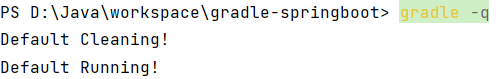

# Task
项目实质上是 Task 对象的集合。一个 Task 表示一个逻辑上较为独立的执行过程，比如编译 Java 源代码，拷贝文件，打包 Jar 文件，甚至可以是执行一个系统命令。另外，一个 Task 可以读取和设置 Project 的 Property 以完成特定的操作。
# 任务入门
Build Script Basics (gradle.org) (opens new window)
task A {
println "root taskA"
doFirst() {
println "root taskA doFirst"
}
doLast() {
println "root taskA doLast"
}
}
在文件所在的目录执行命令: gradle A。 提示 1 :task 的配置段是在配置阶段完成 提示 2 :task 的 doFirst、doLast 方法是执行阶段完成，并且 doFirst 在 doLast 执行之前执行。 提示 3:区分任务的配置段和任务的行为,任务的配置段在配置阶段执行,任务的行为在执行阶段执行
# 任务的行为
def map = new HashMap<String, Object>();
//action属性可以设置为闭包， 设置task自身的行为
map.put("action", { println "taskD.." })
task(map, "a") {
description 'taskA description....'
group "dfd"
//在task内部定义doFirst、 doLast行为
doFirst {
def name = 'doFirst..'
println name
}
doLast {
def name = 'doLast..'
println name
}
}
//在task外部定义doFirst、 doLast行为
a.doFirst {
println it.description
}
a.doLast {
println it.group
}

底层原理分析：无论是定义任务自身的 action，还是添加的 doLast、doFirst 方法，其实底层都被放入到一个 Action 的 List中了，最初这个 action List 是空的，当我们设置了 action【任务自身的行为】,它先将 action 添加到列表中，此时列表中只有一个 action,后续执行 doFirst 的时候 doFirst 在 action 前面添加，执行 doLast 的时候 doLast 在 action 后面添加。doFirst永远添加在 actions List 的第一位，保证添加的 Action 在现有的 action List 元素的最前面；doLast 永远都是在 action List末尾添加，保证其添加的 Action 在现有的 action List 元素的最后面。一个往前面添加,一个往后面添加，最后这个 action List 就按顺序形成了 doFirst、doSelf、doLast 三部分的 Actions，就达到 doFirst、doSelf、doLast 三部分的 Actions 顺序执行的目的。
# 任务的依赖方式
Task 之间的依赖关系可以在以下几部分设置：
- 参数依赖
- 内部依赖
- 外部依赖
方式一：参数方式依赖
task A {
doLast {
println "TaskA.."
}
}
task 'B' {
doLast {
println "TaskB.."
}
}
//参数方式依赖: dependsOn后面用冒号
task 'C'(dependsOn: ['A', 'B']) {
doLast {
println "TaskC.."
}
}
方式二：内部依赖
//参数方式依赖
task 'C' {
//内部依赖：dependsOn后面用 = 号
dependsOn = [A, B]
doLast {
println "TaskC.."
}
}
方式三：外部依赖
//外部依赖:可变参数,引号可加可不加
C.dependsOn(B,'A')
当然：task 也支持跨项目依赖
在 subproject01 工程的 build.gradle 文件中定义
task A {
doLast {
println "TaskA.."
}
}
在 subproject02 工程的 build.gradle 文件中定义
task B {
dependsOn(":subproject01:A") //依赖根工程下的subject01中的任务A ： 跨项目依赖。
doLast {
println "TaskB.."
}
}
测试：gradle B ,控制台显示如下

拓展 1：当一个 Task 依赖多个 Task 的时候，被依赖的 Task 之间如果没有依赖关系，那么它们的执行顺序是随机的,并无影响。
拓展 2：重复依赖的任务只会执行一次,比如： A -> B、C B -> C 任务 A 依赖任务 B 和任务 C、任务 B 依赖 C 任务。执行任务 A 的时候，显然任务 C 被重复依赖了，C 只会执行一次。
# 任务执行
任务执行语法：gradle [taskName...] [--option-name...]
| 分类 | 解释 |
|---|---|
| 常见的任务（*） | gradle build: 构建项目:编译、测试、打包等操作 gradle run :运行一个服务,需要 application 插件支持，并且指定了主启动类才能运行 gradle clean: 请求当前项目的 build 目录 gradle init : 初始化 gradle 项目使用 gradle wrapper:生成 wrapper 文件夹的。 gradle wrapper 升级 wrapper 版本号：gradle wrapper --gradle-version=4.4 gradle wrapper --gradle-version 5.2.1 --distribution-type all :关联源码用 |
| 项目报告相关任务 | gradle projects : 列出所选项目及子项目列表，以层次结构的形式显示 gradle tasks: 列出所选项目【当前 project,不包含父、子】的已分配给任务组的那些任务。 gradle tasks --all :列出所选项目的所有任务。 gradle tasks --group="build setup":列出所选项目中指定分组中的任务。 gradle help --task someTask :显示某个任务的详细信息 gradle dependencies :查看整个项目的依赖信息，以依赖树的方式显示 gradle properties 列出所选项目的属性列表 |
| 调试相关选项 | -h,--help: 查看帮助信息 -v, --version:打印 Gradle、 Groovy、 Ant、 JVM 和操作系统版本信息。 -S, --full-stacktrace:打印出所有异常的完整(非常详细)堆栈跟踪信息。 -s,--stacktrace: 打印出用户异常的堆栈跟踪(例如编译错误)。 -Dorg.gradle.daemon.debug=true: 调试 Gradle 守护进程。 -Dorg.gradle.debug=true:调试 Gradle 客户端(非 daemon)进程。 -Dorg.gradle.debug.port=(port number):指定启用调试时要侦听的端口号。默认值为 5005。 |
| 性能选项:【备注:在 gradle.properties 中指定这些选项中的许多 选项，因此不需要命 令行标志】 | --build-cache, --no-build-cache： 尝试重用先前版本的输出。默认关闭(off)。 --max-workers: 设置 Gradle 可以使用的 woker 数。默认值是处理器数。 -parallel, --no-parallel: 并行执行项目。有关此选项的限制，请参阅并行项目执行。 默认设置为关闭(off) |
| 守护进程选项 | --daemon, --no-daemon: 使用 Gradle 守护进程运行构建。默认是 on --foreground:在前台进程中启动 Gradle 守护进程。 -Dorg.gradle.daemon.idletimeout=(number of milliseconds): Gradle Daemon 将在这个空闲时间的毫秒数之后停止自己。默认值为 10800000(3 小时)。 |
| 日志选项 | -Dorg.gradle.logging.level=(quiet,warn,lifecycle,info,debug): 通过 Gradle 属性设置日志记录级别。 -q, --quiet: 只能记录错误信息 -w, --warn: 设置日志级别为 warn -i, --info: 将日志级别设置为 info -d, --debug:登录调试模式(包括正常的堆栈跟踪) |
| 其它(*) | -x:-x 等价于: --exclude-task : 常见 gradle -x test clean build --rerun-tasks: 强制执行任务，忽略 up-to-date ,常见 gradle build --rerun-tasks --continue: 忽略前面失败的任务,继续执行,而不是在遇到第一个失败时立即停止执行。每 个遇到的故障都将在构建结束时报告，常见：gradle build --continue。 gradle init --type pom :将 maven 项目转换为 gradle 项目(根目录执行) gradle [taskName] :执行自定义任务 |
Command-Line Interface (gradle.org) (opens new window)
拓展 1：gradle 任务名是缩写: 任务名支持驼峰式命名风格的任务名缩写，如：connectTask 简写为：cT,执行任务 gradle cT。
拓展 2:前面提到的 Gradle 指令本质:一个个的 task[任务], Gradle 中所有操作都是基于任务完成的。
拓展 3：gradle 默认各指令之间相互的依赖关系：

# 任务定义方式
任务定义方式，总体分为两大类：一种是通过 Project 中的 task() 方法，另一种是通过 tasks 对象的 create 或者 register 方法。
task('A', {//任务名称,闭包都作为参数
println "taskA..."
})
task('B') {//闭包作为最后一个参数可以直接从括号中拿出来
println "taskB..."
}
task C {//groovy语法支持省略方法括号:上面三种本质是一种
println "taskC..."
}
def map = new HashMap<String, Object>();
map.put("action", { println "taskD.." }) //action属性可以设置为闭包
task(map, "D");
tasks.create('E') {//使用tasks的create方法
println "taskE.."
}
tasks.register('f') { //注：register执行的是延迟创建。也即只有当task被需要使用的时候才会被创建。
println "taskF...."
}
当然：我们也可以在定义任务的同时指定任务的属性，具体属性有：
| 配置项 | 描述 | 默认值 |
|---|---|---|
| type | 基于一个存在的Task来创建，和我们类继承差不多 | DefaultTask |
| overwrite | 是否替换存在的Task，这个和type配合起来用 | false |
| dependsOn | 用于配置任务的依赖 | [] |
| action | 添加到任务中的一个Action或者闭包 | null |
| description | 用于配置任务的描述 | null |
| group | 用于配置任务的分组 | null |
在定义任务时也可以给任务分配属性：定义任务的时候可以直接指定任务属性，也可以给已有的任务动态分配属性：
//1.F是任务名，前面通过具名参数给map的属性赋值,以参数方式指定任务的属性信息
task(group: "dfd", description: "this is task B", "F")
//2.H是任务名，定义任务的同时，在内部直接指定属性信息
task("H") {
group("dfd")
description("this is the task H")
}
//3.Y是任务名，给已有的任务 在外部直接指定属性信息
task "y" {}
y.group = "dfd"
clean.group("dfd") //案例：给已有的clean任务重新指定组信息
可以在 idea 中看到: 上面自定义的那几个任务和 gradle 自带的 clean 任务已经跑到：dfd 组了。

# 任务类型
前面我们定义的 task 都是 DefaultTask 类型的,如果要完成某些具体的操作完全需要我们自己去编写 gradle 脚本，势必有些麻烦，那有没有一些现成的任务类型可以使用呢？有的，Gradle 官网给出了一些现成的任务类型帮助我们快速完成想要的任务，我们只需要在创建任务的时候，指定当前任务的类型即可，然后即可使用这种类型中的属性和 API 方法了。
| 常见任务类型 | 该类型任务的作用 |
|---|---|
| Delete | 删除文件或目录 |
| Copy | 将文件复制到目标目录中。此任务还可以在复制时重命名和筛选文件 |
| CreateStartScripts | 创建启动脚本 |
| Exec | 执行命令行进程 |
| GenerateMavenPom | 生成 Maven 模块描述符(POM)文件 |
| GradleBuild | 执行 Gradle 构建 |
| Jar | 组装 JAR 归档文件 |
| JavaCompile | 编译 Java 源文件 |
| Javadoc | 为 Java 类生成 HTML API 文档 |
| PublishToMavenRepository | 将 MavenPublication 发布到 mavenartifactrepostal |
| Tar | 组装 TAR 存档文件 |
| Test | 执行 JUnit (3.8.x、4.x 或 5.x)或 TestNG 测试 |
| Upload | 将 Configuration 的构件上传到一组存储库 |
| War | 组装 WAR 档案 |
| Zip | 组装 ZIP 归档文件。默认是压缩 ZIP 的内容 |
Gradle DSL Version 7.5.1 (opens new window)
具体使用例如：
tasks.register('myClean', Delete) {
delete buildDir
}
在命令行执行 gradle myClean 发现就可以将当前 project 的 build 目录删除。
当然除了 gradle 自带的 task 类型,我们也可以自定义 task 类型：
def myTask = task MyDefinitionTask(type: CustomTask)
myTask.doFirst() {
println "task 执行之前 执行的 doFirst方法"
}
myTask.doLast() {
println "task 执行之后 执行的 doLast方法"
}
class CustomTask extends DefaultTask {
//@TaskAction表示Task本身要执行的方法
@TaskAction
def doSelf() {
println "Task 自身 在执行的in doSelf"
}
}
测试：gradle MyDefinitionTask

# 任务的执行顺序
在 Gradle 中,有三种方式可以指定 Task 执行顺序：
dependsOn 强依赖方式
通过 Task 输入输出
通过 API 指定执行顺序
详细请参考官网：Task - Gradle DSL Version 7.5.1 (opens new window)
# 动态分配任务
gradle 的强大功能不仅仅用于定义任务的功能。例如，可以使用它在循环中注册同一类型的多个任务
4.times { counter ->
tasks.register("task$counter") {
doLast {
println "I'm task number $counter"
}
}
}
// 构建 4 个任务,但是任务 0 必须依赖于任务 2 和 3,那么代表任务 2 和 3 需要在任务 0 之前优先加载。
tasks.named('task0') { dependsOn('task2', 'task3') }
使用gradle -q task0执行
![]()
# 任务的关闭与开启
每个任务都有一个 enabled 默认为的标志 true 。将其设置为 false阻止执行任何任务动作。禁用的任务将标记为 跳过 。
task disableMe {
doLast {
println 'This task is Executing...'
}
enabled(true)//直接设置任务开启， 默认值为true
}
//disableMe.enabled = false //设置关闭任务
# 任务的超时
每个任务都有一个 timeout 可用于限制其执行时间的属性。当任务达到超时时，其任务执行线程将被中断。该任务将被标记为失败。终结器任务仍将运行。如果 --continue 使用，其他任务可以在此之后继续运行。不响应中断的任务无法超时。Gradle 的所有内置任务均会及时响应超时。
task a() {
doLast {
Thread.sleep(1000)
println "当前任务a执行了"
}
timeout = Duration.ofMillis(500)
}
task b() {
doLast {
println "当前任务b执行了"
}
}
在控制台使用: gradle a b 测试会发现执行 a 的时候,由于 a 执行超时，抛出异常，所以没有继续往下执行【b 也没执行】。然后在控制台使用: gradle a b –continue,测试会发现 a 虽然执行失败，但是 b 还是执行了 。
# 任务的查找
task dongdong {
doLast {
println "东东很大"
}
}
//根据任务名查找
tasks.findByName("dongdong").doFirst({ println "东东好大啊" })
tasks.getByName("dongdong").doFirst({ println "东东巨大啊" })
//根据任务路径查找【相对路径】
tasks.findByPath(":dongdong").doFirst({ println "东东好最啊" })
tasks.getByPath(":dongdong").doFirst({ println "东东好小啊" })
![]()
# 任务的规则
当我们执行、依赖一个不存在的任务时，Gradle 会执行失败,报错误信息。那我们能否对其进行改进,当执行一个不存在的任务时，不是报错而是打印提示信息呢？
task hello {
doLast {
println 'hello 你好'
}
}
tasks.addRule("对该规则的一个描述，便于调试、查看等") {
String taskName ->
task(taskName) {
doLast {
println "该${taskName}任务不存在，请查证后再执行"
}
}
}
测试: 使用 gradle abc hello 进行测试,此时当 abc 任务不存在时，也不会报异常【不中断执行】而是提示自定义的规则信息，继续执行 hello 任务。此外，它还可以根据不同的规则动态创建需要的任务等情况 。
# 任务的 onlyIf 断言
断言就是一个条件表达式。Task 有一个 onlyIf 方法。它接受一个闭包作为参数，如果该闭包返回 true 则该任务执行，否则跳过。这有很多用途，比如控制程序哪些情况下打什么包，什么时候执行单元测试，什么情况下执行单元测试的时候不执行网络测试等。具体案例如下所示：
task hello {
doLast {
println 'hello 东东'
}
}
//如果hello任务没有dd这个属性，就会执行
hello.onlyIf { !project.hasProperty('dd') }
测试：通过-P 为 Project 添加 dd 属性。gradle hello -Pdd
# 默认任务
Gradle 允许您定义一个或多个在没有指定其他任务时执行的默认任务。
defaultTasks 'myClean', 'myRun'
tasks.register('myClean') {
doLast {
println 'Default Cleaning!'
}
}
tasks.register('myRun') {
doLast {
println 'Default Running!'
}
}
tasks.register('other') {
doLast {
println "I'm not a default task!"
}
}
